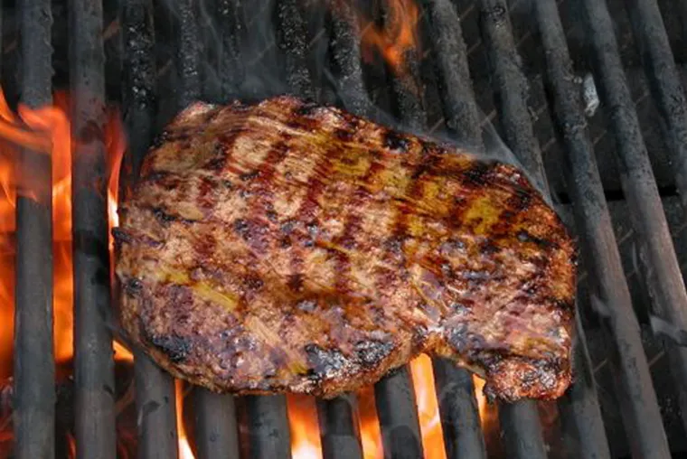

Steak
Steak

Description
Steaks are a delicious meal that can be paired with many side dishes and your choice of complementing wine to enjoy as a great dinner.
Ingredients
- Raw steak cut of your choice
- Olive oil, salt, pepper
- Butter
- Thyme
Steps
- Season the raw steak with olive oil, salt, and pepper, making sure that the seasoning is evenly coated all around the steak
- Get your pan to high heat, make sure it is searing hot before placing your raw steak on top
- Cook the steak 2 minutes per side (top and bottom) until there is a nice sear
- Lower the heat and baste the steak with butter and thyme for approximately two minutes
- Take the cooked steak off of the heat and let it rest for five minutes at room temperature. Cut and serve afterwards